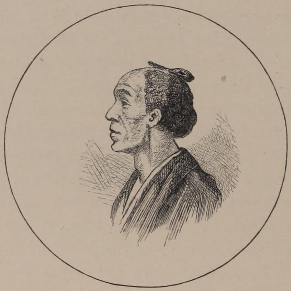

“Hair of labourer”
Japan: Its History, Traditions, and Religions (1880)
Men and women go uncovered both at home and abroad; the military are the only exception to this rule. To protect their heads from the sun, their large paper umbrellas or their fans are used. In the north, where the winters are often severe, they muffle up their heads in a cloth, so that only the nose and eyes are visible.
Japan, the Amoor, and the Pacific (1861)
Among the crowds in the streets [of Kobe] I was interested to meet a party of men who had their hair dressed after the old style. That is, it was closely shaved in front, and a small lock from the back being brought forward, was tied on the crown of the head. The object in old days was to leave them perfectly free to fight, but in the present day, even in the country, the practice seems almost extinct. Women, indeed, keep strictly to the old elaborate arrangement of their hair, though it is usually done only once or twice a week, or on grand occasions, the high wooden pillows on which they rest their necks at night keeping it in order meanwhile. Economy is the reason given for this, a full Japanese coiffure being impossible without the aid of a hair-dresser. A man will explain his wife’s unexpected absence from a party in this way: “My wife’s hair was dressed, but she was prevented from coming at the last moment.” Men have their hair cut short, in European fashion, and pig-tails are of course unknown in Japan, though this latter fact has evidently not penetrated into all the publishing world of England. It is only necessary to glance at the Christmas picture-books for children issued in 1892, and a selection may be found of most unnatural little Japanese, the original of whose lengthy pig-tails might be hunted for in vain within the limits of the Mikado’s Empire!
Japan As We Saw It (Bickersteth) (1893)
On riding up to the hotel we found that there had been a great influx of visitors, and were not long in discovering that a hairdresser was busily engaged exercising her functions on the heads of the ladies present. Though I was very tired, and my appetite uncommonly ravenous, I could not resist a desire to linger awhile at the doorway and watch this public operation. It was fortunate I did so, for I witnessed two different styles of hair-dressing, both equally elaborate and laborious, and made an exact memorandum of the various articles used during the whole process. We counted no fewer than twenty-eight small combs, numbers of lengths of black thread, white ditto, black grease (made use of in order not to shew amid the jetty tresses), a thick kind of waxy-looking grease, applied in order to make the hair stiff, and thus more subservient to the will of the operator. Besides these were endless quantities of wire shapes, pads, and papers cut to sizes, all of which were in constant requisition.
The Japanese women have no parting in the centre, but a piece of hair immediately in front is divided off an inch and a half in breadth, the divisions on each side of this lock joining in the middle of the head, about half a finger length from the forehead. The hair for a small space behind this is always kept shaved, the front piece being tied immediately above the shaved part, and generally joined in with the back, though it is sometimes cut quite short after it is tied.
The hair at the back and sides is suffered to grow very long, separated off, then tied, and some portions dressed, all the rest being reunited and again divided, rolled over pads, round shapes, &c., in a manner too intricate to admit of any intelligible attempt at explanation. The mode most generally adopted, probably from being the least elaborate of all I saw, consists of a large bunch of hair on the crown of the head, the front dressed as usual, leaving but little hair immediately at the back. This bunch they decorate according to their means, station, or the toilette the occasion requires, invariably with some ornament or other, not unfrequently consisting of pins and beads, arranged in quite as inexplicable a manner as the head gear of the Chinese ladies. The mirrors they make use of are very primitive, made, not of glass, but of metal, polished bright as silver, the reverse side being ornamented with storks, flowers, and leaves in an artistic style.
A Lady’s Visit to Manilla and Japan (1863)
◀ FootwearWesternization ▶